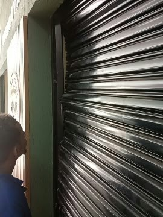
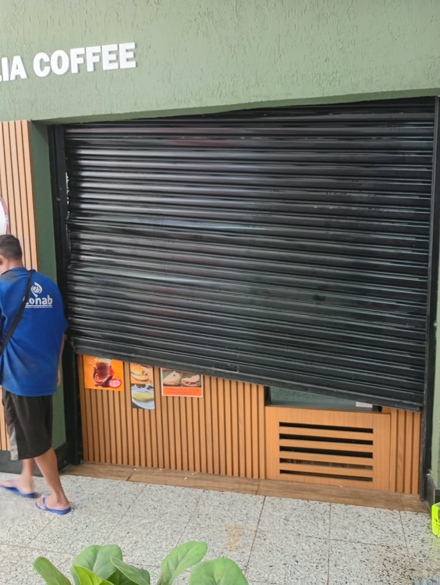
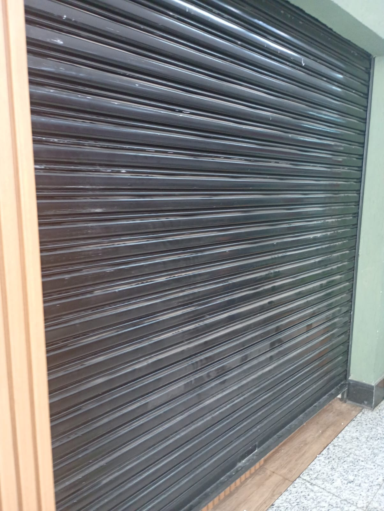
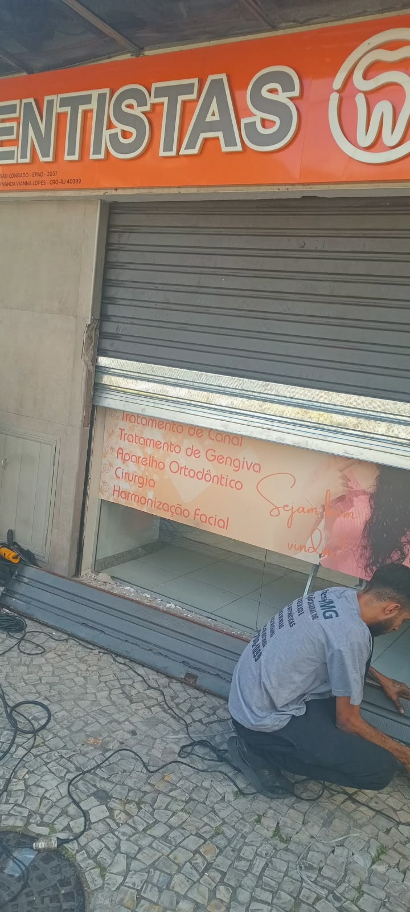
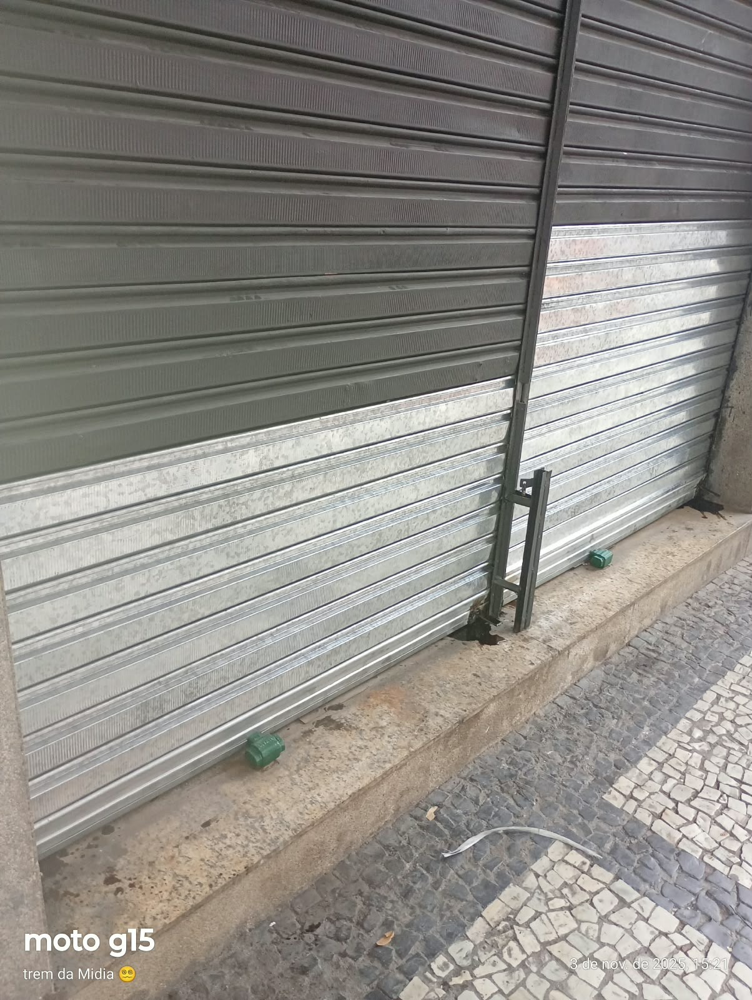
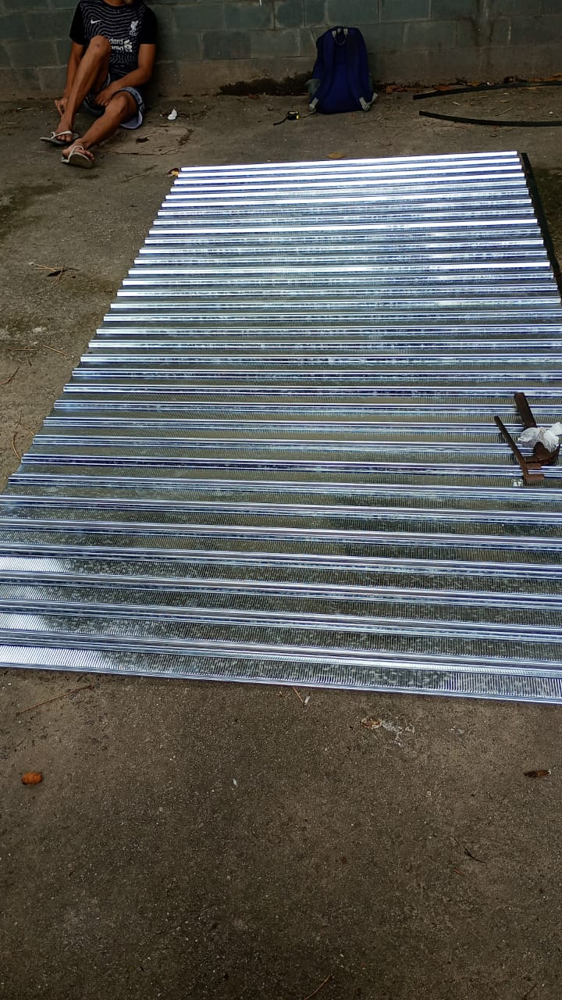
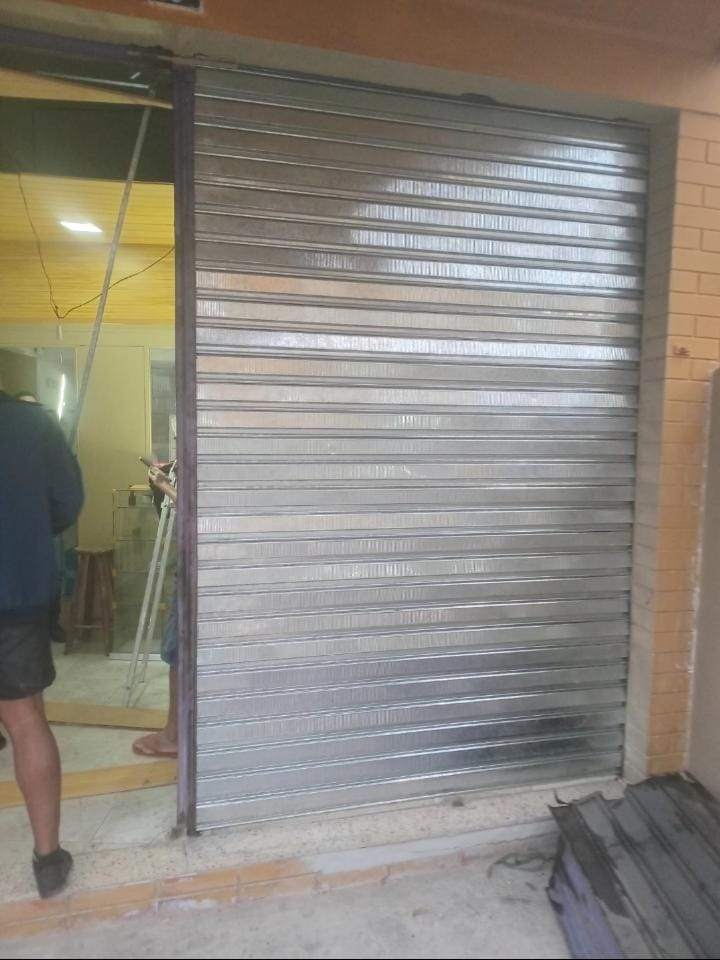
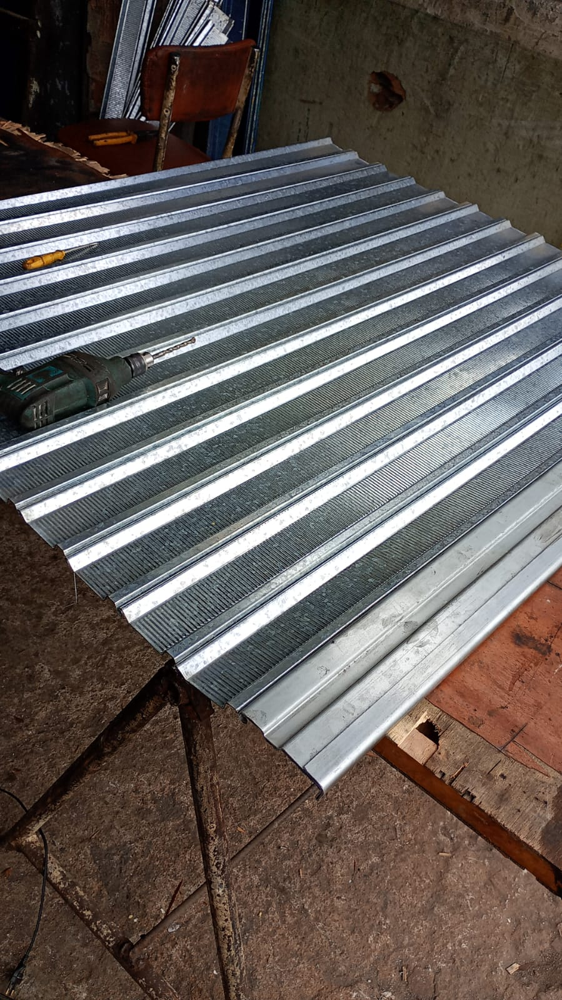

Conserto de portas de aço
Porta travada, danificada ou com dificuldade para abrir e fechar? Conte com nosso atendimento de reparo.
Solicitar consertoPortas de aço de enrolar • Rio de Janeiro
Conserto 24 horas, manutenção, instalação e automatização de portas de aço manuais e automáticas na Zona Sul e Grande Rio.
Atendimento emergencial 24h • Orçamento pelo WhatsApp
Soluções para portas de aço de enrolar, seja para resolver uma emergência ou instalar uma nova porta no seu comércio.
Porta travada, danificada ou com dificuldade para abrir e fechar? Conte com nosso atendimento de reparo.
Solicitar consertoManutenção de componentes e ajustes necessários para recuperar o funcionamento da sua porta.
Pedir manutençãoInstalação, avaliação e troca de motor para portas de aço automáticas ou adaptação de portas manuais.
Orçar motorPortas de aço de enrolar feitas conforme as medidas e necessidades do seu espaço.
Orçar fabricaçãoInstalação de portas de aço galvanizado, manuais ou automáticas, para diferentes tipos de estabelecimentos.
Orçar instalaçãoPrecisa abrir ou fechar seu comércio com urgência? Entre em contato com nosso plantão 24 horas.
Chamar plantãoFotos reais de portas, materiais e serviços da Escobar Serralheria. Conheça um pouco do nosso trabalho.








As imagens desta galeria são registros de trabalhos da Escobar. A foto ilustrativa do topo é utilizada apenas como referência visual nesta versão.
Somos uma serralheria especializada em portas de aço de enrolar, com atendimento no Rio de Janeiro. Trabalhamos com consertos, manutenção, fabricação, instalação e automatização de portas para comércios e outros imóveis.
Nosso compromisso é oferecer atendimento claro, soluções adequadas ao problema e mais tranquilidade para quem depende da porta funcionando bem.
Da manutenção ao projeto de uma nova porta de aço, buscamos unir cuidado com o serviço, orientação clara e atendimento próximo do cliente.
Alguns compromissos que fazem parte da nossa forma de atender.
Atendimento para situações urgentes com portas de aço.
Documentação para os serviços realizados.
Condições de garantia informadas conforme o serviço.
Base em Copacabana, com atendimento na Zona Sul e Grande Rio.
Fale diretamente com a Escobar Serralheria.
Solicitar orçamento no WhatsApp